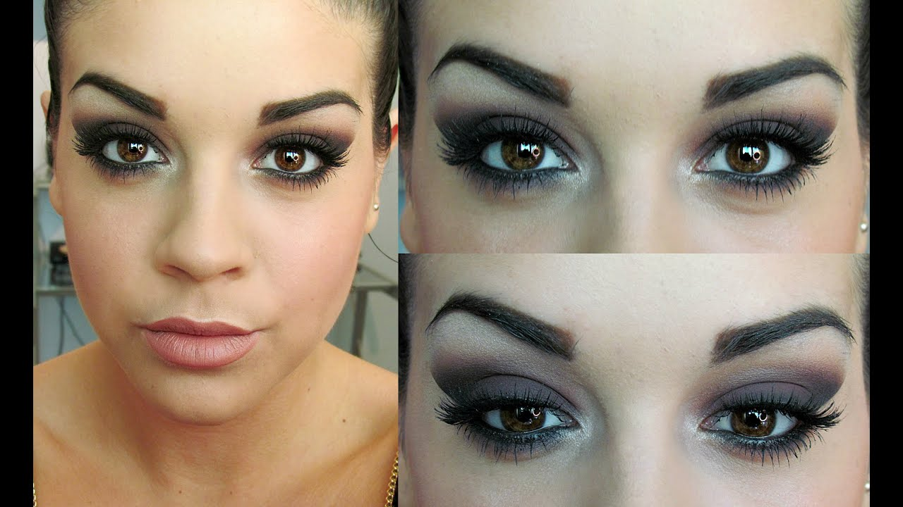

Gli occhi di Norman: Quel J’accuse che non lascia scampo Ogni giorno i nostri occhi sono sottoposti a stress che possono provocare una serie di disturbi come l'Occhio secco e l'Occhio rosso. I prodotti Isomar Occhi sono appositamente studiati per una risposta mirata ai principali e più frequenti disturbi oculari.
Ottica Bianchi – La qualitá nei tuoi occhi Dieci anni dal sacrificio di mio figlio, dieci anni di discesa agli inferi nel silenzio di buona parte della stampa e di tutte le istituzioni che dovrebbero implorare il perdono di quegli occhi di bambino, il cui j’accuse non lascia scampo ai filistei della cultura e ai mercanti del Tempio della politica italiota.
Shop Risparmio Casa - VENUS Detergente Bifase Viso e Occhi ... Introduzione all’ ipermetropia L’ ipermetropia è una ametropia oculare in cui l’ immagine di un oggetto posto in lontananza va a fuoco dopo la retina, anzi che su di essa, a causa del potere diottrico dell’ occhio insufficiente, o del bulbo oculare troppo corto.
Isomar - Sollievo Occhi Rossi Gocce Oculari, Occhi di ... L'innovativa formula bi-fase specifica per il trucco waterpproof deterge con delicatezza e strucca perfettamente viso e occhi. L'Acqua Virginiana, ad azione decongestionante, elimina le tossine, rinfresca, tonifica e risveglia lo splendore naturale del vi
Come rilevare problemi agli occhi in un 2-mese-vecchio ... I migliori prodotti cosmetici per il contorno occhi in vendita su AMICAFARMACIA. Trattamenti contro le borse e occhiaie, struccanti e make up. Scopri subito le OFFERTE Bionike, Lierac, Avene, Vichy.
link cattolici: Alzo gli occhi verso il cielo Gli occhi parlano. Fidatevi di me, non sono pazzo. Mento, sono pazzo. Ma gli occhi parlano, dicono molto, non stanno zitti un attimo. A volte ti feriscono, a volte ti fanno innamorare, con quelle loro dolci maniere. È incredibile come così, con tanta spontaneità riescano a trasmettere rabbia, felicità, addii e dei vaffanculo. Gli occhi parlano
Isomar - Prodotti Igiene Quotidiana Naso Orecchie Occhi ... Tenere al sicuro le tue informazioni personali è la nostra priorità assoluta. Ti informiamo che abbiamo aggiornato la nostra politica sulla privacy secondo il regolamento europeo sulla protezione dei dati che entrerà in vigore il 25 maggio 2018 (GDPR)
10+ "Andrea Occhi" profiles | LinkedIn Roma, occhi fissi su Chiesa Share; 3 del 06 settembre 2020 alle 10:36. 120 Il futuro di Federico Chiesa alla Fiorentina, al momento, è sempre in bilico. Le pretendenti, con il Milan in pole ...
Occhi View the profiles of professionals named "Andrea Occhi" on LinkedIn. There are 10+ professionals named "Andrea Occhi", who use LinkedIn to exchange information, ideas, and opportunities.

WordReference .com |
Dizionari di lingua online
Dizionario Italiano-Inglese | occhio Forum Vedere Anche: occhiaia occhiale occhiali occhialuto occhiata occhiatura occhieggiare occhiellatura occhiello occhietto occhio occhiolino occidentale occidentalizzare occidentalizzazione occidente occipitale occipite occludere occlusione occlusivo Impostazioni: Un clic sulla parola: la traduce non fa niente Ricerche recenti: Salva la cronologia Mostra tutti Link: ⚙️Preferences Abbreviazioni Simboli di pronuncia Sostieni WR Regole sulla privacy Forum Suggestions/ Contattaci
occhio
[links] Ascoltare: [ˈɔkkjo] ⓘ Una o più discussioni del forum combaciano perfettamente col termine che hai cercato definizione | in spagnolo | Coniugatore [IT] | Conjugator [EN] | nel contesto | immagini WR Apps: Android & iPhone Word of the day Forme flesse di ' occhio ' ( nm ): pl : occhi WordReference Collins
Principal Translations/Traduzioni principali Italiano Inglese occhio nm sostantivo maschile : Identifica un essere, un oggetto o un concetto che assume genere maschile: medico, gatto, strumento, assegno, dolore (vista: organo) eye, eyeball n noun : Refers to person, place, thing, quality, etc. Ho sempre avuto una passione per le ragazze con gli occhi verdi. I've always had a soft spot for girls with green eyes. Manca qualcosa di importante? Segnala un errore o suggerisci miglioramenti Traduzioni aggiuntive Italiano Inglese occhio nm sostantivo maschile : Identifica un essere, un oggetto o un concetto che assume genere maschile: medico, gatto, strumento, assegno, dolore metonimia (vista) sight, eyesight, vision n noun : Refers to person, place, thing, quality, etc. ⓘ Questa frase non è una traduzione della frase inglese. His sight was never very good. occhio nm sostantivo maschile : Identifica un essere, un oggetto o un concetto che assume genere maschile: medico, gatto, strumento, assegno, dolore (foro circolare) loop, hole, eyelet n noun : Refers to person, place, thing, quality, etc. C'era un occhio sulla tenda che le bambine usavano per guardare di nascosto. There was an eyelet in the curtain which the girls used to spy on things. Manca qualcosa di importante? Segnala un errore o suggerisci miglioramenti
Compound Forms/Forme composte Italiano Inglese a colpo d'occhio at a glance, at first glance a occhio more or less, roughly at a glance A occhio e croce more or less adv adverb : Describes a verb, adjective, adverb, or clause--for example, "come quickly ," " very rare," "happening now ," "fall down ." a occhio e croce at a glance more or less, roughly adv adverb : Describes a verb, adjective, adverb, or clause--for example, "come quickly ," " very rare," "happening now ," "fall down ." a occhio nudo with the naked eye plainly, clearly Nota : It can mean, it does not take glasses to see something. a perdita d'occhio loc avv locuzione avverbiale : Espressione di più parole che descrive o specifica il significato di un verbo, di una frase, o di parti del discorso: "Siamo arrivati in anticipo " - "L'ho chiamato di nuovo " - "Ho dormito per un po' " (estensione: immenso) as far as the eye can see adv adverb : Describes a verb, adjective, adverb, or clause--for example, "come quickly ," " very rare," "happening now ," "fall down ." a vista d'occhio quickly adv adverb : Describes a verb, adjective, adverb, or clause--for example, "come quickly ," " very rare," "happening now ," "fall down ." till the eye can see andare a occhio, fare a occhio approximate, guess Nota : It means to judge by the eye; to not measure but rather use the eye to estimate what is right. Particularly used in cooking, but has many uses. avere l'occhio clinico have a clinical eye avere un occhio di riguardo per have special consideration for v expr verbal expression : Phrase with special meaning functioning as verb--for example, "put their heads together," "come to an end." hold [sb] in high regard v expr verbal expression : Phrase with special meaning functioning as verb--for example, "put their heads together," "come to an end." chiudere un occhio ( pretend nothing has happened ) to turn a blind eye to [sth] chiudere un occhio su turn a blind eye on [sth] colpo d'occhio nm sostantivo maschile : Identifica un essere, un oggetto o un concetto che assume genere maschile: medico, gatto, strumento, assegno, dolore figurato (veduta generale) glance colpo d'occhio nm sostantivo maschile : Identifica un essere, un oggetto o un concetto che assume genere maschile: medico, gatto, strumento, assegno, dolore figurato (prima vista) at first glance dare nell'occhio to attract attention dente per dente, occhio per occhio loc avv locuzione avverbiale : Espressione di più parole che descrive o specifica il significato di un verbo, di una frase, o di parti del discorso: "Siamo arrivati in anticipo " - "L'ho chiamato di nuovo " - "Ho dormito per un po' " (legge del taglione) ( idiomatic ) a tooth for a tooth, an eye for an eye expr expression : Prepositional phrase, adverbial phrase, or other phrase or expression--for example, "behind the times," "on your own." di buon occhio positively, favorably Essere come un bruscolo in un occhio be annoying essere nell'occhio del ciclone be in the eye of the storm essere un pugno in un occhio be an eyesore fare l'occhio di triglia look languidly guardare con la coda dell'occhio, vedere con la coda dell'occhio see out of the corner of your eye guardare con la coda dell'occhio check out [sth] with the corner of the eye il bianco dell'occhio white part of the eye in un batter d'occhio in the blink of an eye innesto a occhio ( trees ) grafting method non vedere di buon occhio not look kindly upon, not view highly v expr verbal expression : Phrase with special meaning functioning as verb--for example, "put their heads together," "come to an end." occhio alla penna! ( pay attention ) watch out! occhio clinico nm sostantivo maschile : Identifica un essere, un oggetto o un concetto che assume genere maschile: medico, gatto, strumento, assegno, dolore (che riconosce subito una malattia) good eye expr expression : Prepositional phrase, adverbial phrase, or other phrase or expression--for example, "behind the times," "on your own." Even though he wasn't a veterinarian, my grandfather had a good eye for all of the cows' diseases. occhio di bue nm sostantivo maschile : Identifica un essere, un oggetto o un concetto che assume genere maschile: medico, gatto, strumento, assegno, dolore (minerale) ox eye stone occhio di lince eagle eyes smart person occhio di riguardo nm sostantivo maschile : Identifica un essere, un oggetto o un concetto che assume genere maschile: medico, gatto, strumento, assegno, dolore figurato (considerazione particolare) consideration, care occhio nero nm sostantivo maschile : Identifica un essere, un oggetto o un concetto che assume genere maschile: medico, gatto, strumento, assegno, dolore figurato (per trauma) black eye n noun : Refers to person, place, thing, quality, etc. occhio nudo nm sostantivo maschile : Identifica un essere, un oggetto o un concetto che assume genere maschile: medico, gatto, strumento, assegno, dolore (senza telescopi, ecc.) naked eye, unaided eye n noun : Refers to person, place, thing, quality, etc. occhio pollino callous between two toes occhio! careful! watch out! pagare un occhio, pagare un occhio della testa ( to pay too much for [sth] ) to pay through the nose palla dell'occhio eyeball sottocchio, sott'occhio avv avverbio : Descrive o specifica il significato di un verbo, di una frase, o di parti del discorso: "Sostammo brevemente " - "Ho tirato la palla lontano " (in vista) in front of someone adv adverb : Describes a verb, adjective, adverb, or clause--for example, "come quickly ," " very rare," "happening now ," "fall down ." in view adv adverb : Describes a verb, adjective, adverb, or clause--for example, "come quickly ," " very rare," "happening now ," "fall down ." spendere un patrimonio, spendere un occhio della testa spend a fortune strizzare l'occhio wink strizzare l'occhio a wink at strizzata d'occhio nf sostantivo femminile : Identifica un essere, un oggetto o un concetto che assume genere femminile: scrittrice, aquila, lampada, moneta, felicità (ammiccamento) wink n noun : Refers to person, place, thing, quality, etc. tenere d'occhio to keep an eye on [sb] Tenere sott'occhio keep an eye on ⇒ , keep a watchful eye ⇒ v vedere di buon occhio see sbd in a good light Manca qualcosa di importante? Segnala un errore o suggerisci miglioramenti occhio si trova anche in questi elementi: Nella descrizione in italiano: appariscente - bulbo oculare - cristallino - glaucoma - guercio - iride - lente a contatto - monocolo - occhiolino - oculare - oftalmico - pariglia - pupilla - retina - sclera - sgranato - sopracciglio Inglese: eye - face - oculus - winker - an arm and a leg - an eye for an eye - arresting - at a glance - at the drop of a hat - balloon - ballpark - be dismissive of - black eye - black-eyed pea - blot - blue eye - carbuncle - cast a glance - cat's-eye - clap eyes on - clashing - compound eye - connive - cost a bomb - critically - discreetly - eagle eye - eye for detail - eye patch - eyeball - eyesore - fisheye lens - followspot - frown on - glass eye - half a second - have an eye for - have no use for - have your eye on - hawsehole - in sight - in the twinkling of an eye - inconspicuous - inconspicuously - instantly - jump out - keen eye - keep a check on - keep a close watch on - keep an eye on
Forum discussions with the word(s) occhio in the title: Discussioni nei forum nel cui titolo è presente la parola occhio :
a colpo d occhio a occhio a perdita d occhio A vista d occhio Ad occhio e croce all occhio di bue allungare l occhio anche l occhio vuole la sua parte Avere occhio clinico Avere qualcosa sott occhio Avere un occhio di riguardo per Avresti dovuto tenerlo d occhio batter d occhio bell occhio Che occhio! Chi ha l occhio, trova quel che cerca anche a occhi chiusi colpo d occhio con la coda dell occhio con un occhio attento a .... dare nell occhio dare un occhio nero dare un occhio/indicazioni di comportamento darebbe troppo nell occhio le voci circolano Difficilmente l occhio lo ingannava è nell occhio del ciclone. Un turbine di polemiche era come porre l occhio all oculare di un caleidoscopio fango nell occhio Fasolaro/Fagiolo dall occhio Friggi il pesce ma occhio alla gatta! Hai mandato occhio e orecchio altro... Visita il forum Italiano-Inglese. Aiuta WordReference: Poni tu stesso una domanda. Discussioni su occhio nel forum Solo Italiano Vedi la traduzione automatica di Google Translate di 'occhio'.